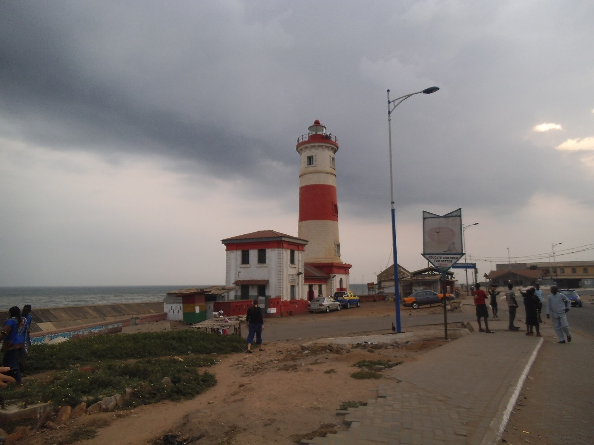
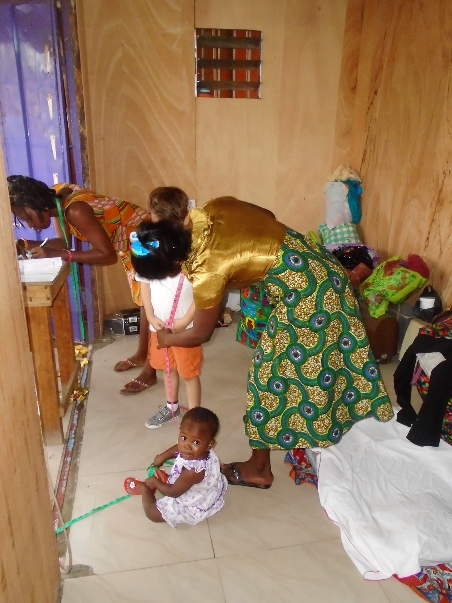

Akwaaba — welcome. Explore Ghana’s sixteen regions, from the coast to the savanna: places worth the trip, photos from people who’ve been, and the spots locals love. Found somewhere good? Add it.
Find your way in ↓Ghana has 16 regions
Each card is one of Ghana’s sixteen regions. Open one to explore its places, its people and the local businesses worth knowing.
Keep scrollingThen pick a region to explore
Ten attractions that drew the country’s biggest recorded crowds last year. Tap a card to see the place.
Accra, Greater Accra
Tap to see it ↻Central Region
Tap to see it ↻Eastern Region
Tap to see it ↻Central Region
Tap to see it ↻Kumasi, Ashanti
Tap to see it ↻Kumasi, Ashanti
Tap to see it ↻Achimota, Greater Accra
Tap to see it ↻Central Region
Tap to see it ↻Greater Accra
Tap to see it ↻Eastern Region
Tap to see it ↻Visits, not unique visitors. Together the ten drew 1,377,588 visits, 77% of all domestic tourism visits. The published summary gives figures for the top five only; 6–10 are shown in rank order. Source: Ghana Tourism Authority, 2025 Tourism Report, as reported by Graphic Online ↗ and The Chronicle ↗